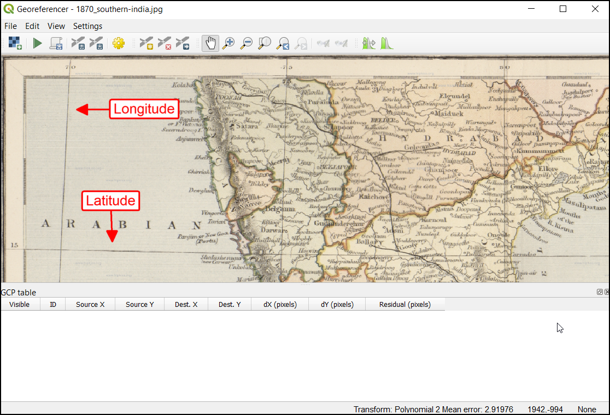

Georeferenzierung von Kartenblättern und eingescannten Karten (QGIS3)¶
Die meisten GIS-Projekte erfordern das Georeferenzieren von Rasterdaten. Georeferenzierung ist der Prozess der Zuweisung von Koordinaten zu jedem Pixel eines Rasterdatensatzes. Oftmals werden die Koordinaten durch Feldarbeit, d.h. durch das Ermitteln der Koordinaten mit Hilfe eines GPS-Gerätes, für einige leicht in der Karte oder dem Bild zu identifizierende Objekte bestimmt. Manchmal findet man beim Digitalisieren auf der gescannten Karte Markierungen, die die Koordinaten anzeigen. Mit Hilfe dieser Markierungspunkte oder Passpunkte (Ground Control Points - GCP) kann das Bild entzerrt und passfähig zum gewählten Koordinatensystem gemacht werden. In dieser Anleitung werden wir die Konzepte, Strategien und Hilfsmittel in QGIS behandeln, um eine hoch genaue Georeferenzierung zu erreichen.
Diese Anleitung beschriebt die Georeferenzierung mit Hilfe von Markierungen die auf der Karte oder dem Bild vorhanden sind (z.B. beschriftete Koordinatengitter). Wenn dein Bild solche Informationen nicht enthält, kannst du folgende Methode anwenden Georeferenzierung von Luftbildern (QGIS3).
Überblick über die Aufgabe¶
Wir werden eine gescannte Karte von Südindien aus dem Jahr 1870 nutzen und diese mit Hilfe von QGIS georeferenzieren.
Weitere Fähigkeiten, die wir erlernen¶
Wie man das geodätische Datum und das Koordinatensystem alter Karten bestimmt.
Save the GCP created.
Edit the created GCP for fine tuning.
Beschaffung der Daten¶
Hipkiss’s Scanned Old Maps Webseite führt eine exzellente Sammlung copyright-freier gescannter Karten, die man zur Nachforschung verwenden kann.
Lade 1870 map of southern India herunter und speichere die Datei als JPG-Bild auf einem lokalen Laufwerk ab.
Der Einfachheit halber kannst du auch eine Kopie des Datensatzes unter folgendem link herunterladen:
Arbeitsablauf¶
Open QGIS and click on to open the tool.
Bemerkung
From QGIS versions 3.26 onwards, the Georeferencer can be launched from .

The Georeferencer is divided into 2 sections. The top section where the image will be displayed and the bottom section where a table showing your GCPs will appear.

Jetzt werden wir unser JPG-Bild öffnen. Gehe zu . Navigiere zu dem heruntergeladenen Bild der gescannten Karte und klicke auf Open.

Wir sehen jetzt das Bild, das im oberen Teil des Fensters dargestellt wird. Du kannst die zoom/pan Knöpfe aus der Toolleiste nutzen, um mehr über die Karte zu erfahren.

Als nächstes müssen wir Koordinaten für einige Punkte auf der Karte zuweisen. Beim genauen Hinsehen findet man ein beschriftetes Koordinatengitter auf der Karte. Es handelt sich dabei um Linien der Breiten- und Längengrade.

Before adding Ground Control Points (GCP), we need to define the Transformation Settings. Click on the gear icon in georeferencing window to open the Transformation settings dialog.

In the Transformation settings dialog, choose the Transformation type as
Polynomial 2. See QGIS Documentation to learn about different transformation types and their uses. Then select the Resampling method as theNearest neighbor. Click the Select CRS button next to Target SRS.

Wenn man eine gescannte Karte wie diese georeferenziert, kann die Information zum Koordinatensystem der Karte selbst entnommen werden. Wenn wir auf unsere Karte sehen, erkennen wir, dass die Koordinaten in Breiten- und Längengraden enthalten sind. Es ist kein geodätisches Datum auf der Karte verzeichnet, so dass wir hier eine Annahme treffen müssen. Da es sich um Indien handelt und die Karte ziemlich alt ist, wird wahrscheinlich das geodätische Datum Everest 1830 gut passen. Suche nach „everest“ und wähle das Koordinatensystem mit der ältesten Angabe des geodätischen Datums Everest (EPSG:4042). Klicke auf OK.

Bemerkung
Topographische Karten des nationalen indischen Vermessungsamtes zwischen 1960 und 2000 nutzten den Rotationsellipsoid Everest 1956 und das geographische Datum India_nepal. Wenn man Karten des indischen Vermssungsamtes georeferenziert, kann man in QGIS ein angepasstes Koordinatensystem mit den folgenden Parametern definieren. Die Definition beinhaltet die Parameter delta_x, delta_y und delta_z zur Transformation ins System WGS84. Weitere Informationen findet man unter Indian Grid System.
+proj=longlat +a=6377301.243 +b=6356100.2284 +towgs84=295,736,257,0,0,0,0 +no_defs
Bemerkung
Die meisten Karten verwenden ein projiziertes KBS. Es kann sein, dass die Karte, die georeferenziert werden soll, ein projiziertes KBS verwendet, die Beschriftung an den Koordinatengittern aber im geographischen System (Länge/Breite) erfolgt. In einem solchem Fall kann man ein alternatives Vorgehen wählen, um Verzerrungen zu verringern. Man erstellt dazu ein Vektorgitter und transformieren es in das bekannte projizierte KBS. Man nutzt das Gitter dann als Referenz zur genauen Erfassung der Koordinaten. Weiter Einzelheiten findet man unter folgenden Seite: this page.
Name your output raster as
1870_southern_india_modified.tif. ChooseLZWas the Compression. Check the Save GCP points to store the points as seperate file for future purpose. Make sure the Load in QGIS when done option is checked. Click OK.

Bemerkung
Uncompressed GeoTIFF files can be very large in size. So compressing them is always a good idea. You can learn more about different TIFF compression options (LZW, PACKBITS or DEFLATE) in this article.
Now we can start adding the Ground Control Points (GCP). Click on the Add Point button.

Now place the cross-hair at the intersections of the grid lines and left-click, this will serve as the ground-truth in our case. As the grid lines are labeled, we can determine the X and Y coordinates of the points using them. In the pop-up window, enter the coordinates. Remember that X=longitude and Y=latitude. Click OK.

Du wirst bemerken, dass die Passpunkttabelle jetzt eine Zeile mit den Details des ersten Passpunktes enthält.

13 . Similarly, add more GCPs covering the entire image. The more points you have, the more accurate your image is registered to the target coordinates. The Polynomial 2 transform requires at least 6 GCPs. Once you have added the minimum number of points required for the transform, you will notice that the GCPs now have a non-zero dX, dY and Residual error values. If a particular GCP has unusually high error values, that usually means a human-error in entering the coordinate values. So you can delete that GCP and capture it again. You can also edit the coordinate values in the GCP Table by clicking the cell in either Dest. X or Dest. Y columns.

Once you are satisfied with the GCPs, click the Start Georeferencing button. This will start the process of warping the image using the GCPs and creating the target raster.

Once the process finishes, you will see the georeferenced layer loaded in QGIS. The georeferencing is now complete. Also, you will notice the Project CRS in the bottom right is set to EPSG:4042 as described in Transformation Settings.

Drag and drop the
OpenStreetMapas Base Map from the XYZ Tiles dropdown at the bottom of the Browser panel to verify the georeferenced layer. To set the transparency, click on the Open layer styling panel icon and select Transparency tab. Set the transparency to40 %. Now the georeferenced image must overlay with the basemap outline.

If the georeference needs more fine-tuning, we can start from the collected GCP points. Browse the
1870_southern_india_modified.tiffile location. You can find an additional file,1870_southern_india_modified.tif.points. This file will contain the GCP points information.

Open the georeferencing tool in QGIS, click , and select the
1870_southern_india_modified.tif.points. This will load the GCP created previously. Then load the1870_southern_india_modified.tifto fine-tune your work.

{kind=link}
{kind=link}